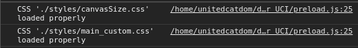
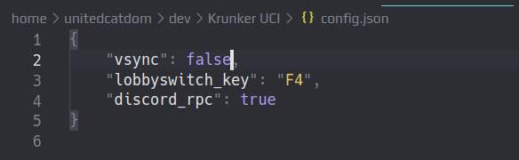
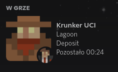

Main Functions
- Custom CSS Loader

- Custom JavaScript files loader
- Client-side Anticheat (for custom JavaScript files)
- JSON configuration

- Discord Rich Persence (lets others see on which map and mode you are playing)

- Unlimited FPS (become a Sonic)
- Built-in lobby switcher (bored of current lobby? Just press one button and play on another!)